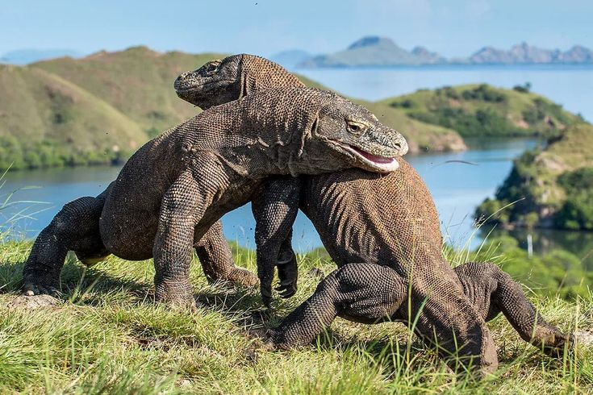
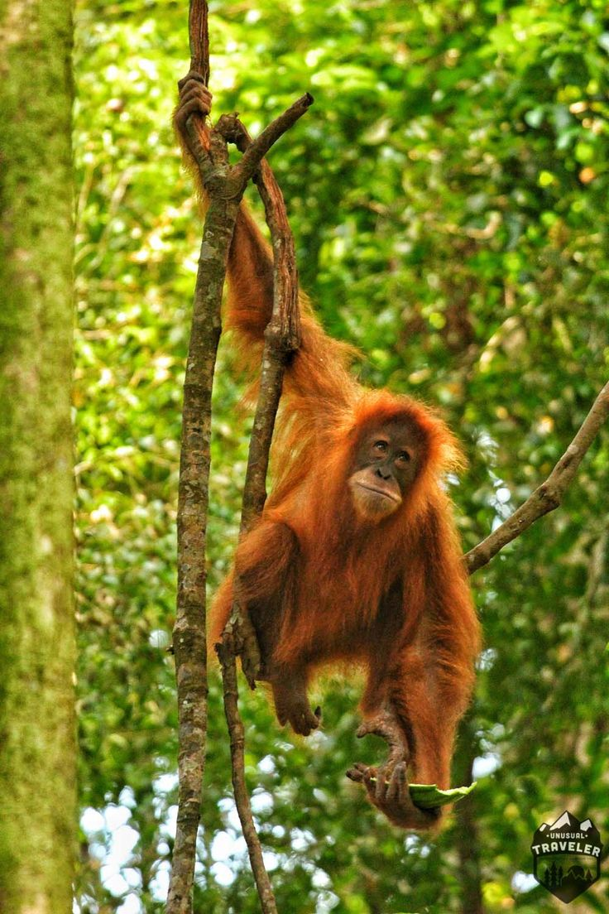

Profil Komodo

Komodo adalah spesies kadal terbesar di dunia dan hanya dapat ditemukan di beberapa pulau di Indonesia, termasuk Pulau Komodo. Sejarah komodo mencakup peran pentingnya dalam ekosistem lokal dan upaya konservasi yang dilakukan untuk melindungi spesies ini dari kepunahan.
Komodo juga menjadi simbol keanekaragaman hayati Indonesia dan menarik perhatian wisatawan dari seluruh dunia.
Profil Orangutan

Orangutan adalah primata yang dikenal dengan kecerdasan dan kemampuan beradaptasi yang tinggi. Mereka dapat ditemukan di hutan hujan tropis di Sumatra dan Kalimantan. Sejarah orangutan mencakup tantangan yang dihadapi akibat deforestasi dan perburuan, yang mengancam kelangsungan hidup mereka.
Upaya konservasi yang dilakukan untuk melindungi orangutan sangat penting untuk menjaga keanekaragaman hayati dan ekosistem hutan tropis.
Profil Cendrawasih

Cendrawasih, atau burung surga, adalah spesies burung yang terkenal dengan keindahan bulunya dan tarian yang menakjubkan. Mereka dapat ditemukan di Papua dan pulau-pulau sekitarnya. Sejarah cendrawasih mencakup peran mereka dalam budaya lokal dan upaya untuk melindungi habitat mereka dari kerusakan.
Cendrawasih juga menjadi simbol keanekaragaman hayati Indonesia dan daya tarik bagi para peneliti dan pengamat burung.